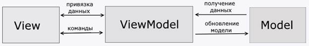

Паттерн MVVM (Model-View-ViewModel) позволяет отделить логику приложения от визуальной части (представления). Данный паттерн является архитектурным, то есть он задает общую архитектуру приложения.
Данный паттерн был представлен Джоном Госсманом (John Gossman) в 2005 году как модификация шаблона Presentation Model и был первоначально нацелен на разработку приложений в WPF. И хотя сейчас данный паттерн вышел за пределы WPF и применяется в самых различных технологиях, в том числе при разработке под Android, iOS, тем не менее WPF является довольно показательной технологией, которая раскрывает возможности данного паттерна.
MVVM состоит из трех компонентов: модели (Model), модели представления (ViewModel) и представления (View).

Model
Модель описывает используемые в приложении данные. Модели могут содержать логику, непосредственно связанную этими данными, например, логику валидации свойств модели. В то же время модель не должна содержать никакой логики, связанной с отображением данных и взаимодействием с визуальными элементами управления.
Нередко модель реализует интерфейсы INotifyPropertyChanged или INotifyCollectionChanged, которые позволяют уведомлять систему об изменениях свойств модели. Благодаря этому облегчается привязка к представлению, хотя опять же прямое взаимодействие между моделью и представлением отсутствует.
View
View или представление определяет визуальный интерфейс, через который пользователь взаимодействует с приложением. Применительно к WPF представление - это код в xaml, который определяет интерфейс в виде кнопок, текстовых полей и прочих визуальных элементов.
Хотя окно (класс Window) в WPF может содержать как интерфейс в xaml, так и привязанный к нему код C#, однако в идеале код C# не должен содержать какой-то логики, кроме разве что конструктора, который вызывает метод InitializeComponent и выполняет начальную инициализацию окна. Вся же основная логика приложения выносится в компонент ViewModel.
Однако иногда в файле связанного кода все может находиться некоторая логика, которую трудно реализовать в рамках паттерна MVVM во ViewModel.
Представление не обрабатывает события за редким исключением, а выполняет действия в основном посредством команд.
ViewModel
ViewModel или модель представления связывает модель и представление через механизм привязки данных. Если в модели изменяются значения свойств, при реализации моделью интерфейса INotifyPropertyChanged автоматически идет изменение отображаемых данных в представлении, хотя напрямую модель и представление не связаны.
ViewModel также содержит логику по получению данных из модели, которые потом передаются в представление. И также VewModel определяет логику по обновлению данных в модели.
Поскольку элементы представления, то есть визуальные компоненты типа кнопок, не используют события, то представление взаимодействует с ViewModel посредством команд.
Например, пользователь хочет сохранить введенные в текстовое поле данные. Он нажимает на кнопку и тем самым отправляет команду во ViewModel. А ViewModel уже получает переданные данные и в соответствии с ними обновляет модель.
Итогом применения паттерна MVVM является функциональное разделение приложения на три компонента, которые проще разрабатывать и тестировать, а также в дальнейшем модифицировать и поддерживать.